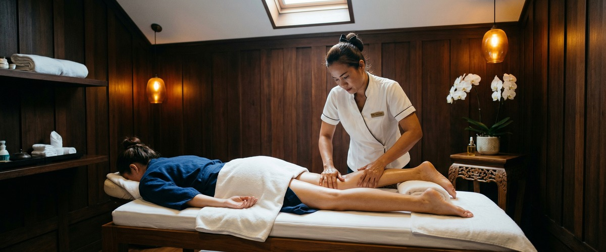
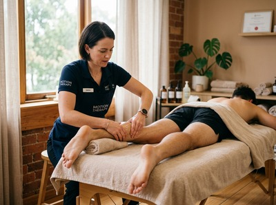

★★★★★ Quality gate failures: readability | paragraphs. Review and edit before removing this notice. ★★★★★
Thai massage, a traditional therapeutic technique combining assisted stretching, acupressure, and rhythmic compression along the body's energy lines, has genuine value for sports recovery.

Research supports its role in reducing muscle fatigue, improving flexibility, and increasing range of motion. These are three factors that matter directly to anyone who trains regularly. Whether you are a runner in Glasgow, a footballer, or a gym regular, Thai massage for sports recovery is worth understanding properly.
The evidence for Thai massage in athletic recovery has grown steadily. A 2024 study found it can help with muscle fatigue after exercise. People in the Thai massage group recovered much faster than those in a control group.

A separate study published in PMC looked at Thai massage effects on fitness in soccer players. Researchers found it may help improve muscle strength, agility, speed, and VO2max. VO2max measures how well your body uses oxygen during exercise — and that matters to anyone training seriously.
Other research suggests Thai massage eases local muscle pain and improves joint movement. These studies do not offer final proof across all sports and athlete types. More research is still needed. But the early findings are promising.
Traditional Thai massage works differently from most recovery methods. A trained therapist uses hands, elbows, knees, and feet to guide the body through assisted stretches. They also apply firm pressure along sen energy lines — the pathways traditional Thai practice links to energy flow and muscle function.
This creates space between bones, tendons, and connective tissue. Blood flow to muscles improves, bringing more oxygen and nutrients. That supports faster recovery and lowers injury risk. Unlike Thai deep tissue oil massage, which targets specific muscle layers, traditional Thai massage covers the whole body in one session.
Research on heart rate and lactic acid shows Thai massage can lower heart rate after exercise. The breathing and deep relaxation built into the technique help the body recover faster after hard training.
If you train regularly and want to see what structured massage can do for your recovery, book your session today at Serendipity on Hope Street, Glasgow.
Sports massage targets specific muscle groups. It is often the first choice for acute post-training soreness or injury prevention in one area. It works well for that purpose. Thai massage takes a different approach — rather than focusing on the hamstrings or shoulders alone, it opens the entire kinetic chain.
For athletes whose training loads the whole body — cyclists, swimmers, martial artists, or gym regulars — Thai massage may offer a more complete recovery stimulus. The two treatments can also work well together as part of a broader recovery plan.
Timing matters. A post-training Thai massage supports recovery, improves flexibility, and reduces muscle soreness. A session the day before a competition or hard training block can improve mobility and prepare the nervous system — as long as the pressure stays gentle.
There are some cases where Thai massage is not the right choice. Anyone recovering from an acute injury, recent surgery, or a condition affecting circulation should speak to a healthcare provider first. The assisted stretching involved makes it unsuitable for all recovery contexts.
At Serendipity Massage Therapy & Wellness on Hope Street in Glasgow, every therapist is trained to adapt pressure and technique to the individual. Whether you need deep restorative work or a lighter session before a training block, they can tailor it to suit you. You can book a Thai massage session online and discuss your training schedule at the start of your appointment.
Not all Thai massage sessions are equal. For sports recovery, look for a therapist who adjusts intensity based on your training load. They should know the difference between post-competition recovery and pre-event prep. They should also take time to find where you are carrying tension before the session starts.
For broader context on recovery methods used alongside massage, see the Wikipedia article on cupping therapy. It covers another technique sometimes used in athletic recovery, with useful notes on the evidence base. Comparing options helps you make better choices about what belongs in your recovery plan.
If you train regularly and have not yet added structured massage to your recovery routine, get in touch to book your appointment at Serendipity and find out what a consistent approach can do.
There are no fixed rules, but most athletes benefit from a session every one to two weeks during heavy training periods. The right frequency depends on your training load, session intensity, and how quickly your body recovers. A therapist at Serendipity can help you build a schedule that fits your training plan.
Neither is better in every case. Sports massage targets specific muscle groups and works well for acute soreness or injury-prone areas. Thai massage takes a full-body approach, addressing flexibility, range of motion, and tension across the whole kinetic chain. For athletes with whole-body fatigue or stiffness, Thai massage often provides a more complete recovery session.
Yes. Research supports Thai massage as an effective tool for muscle fatigue recovery. A controlled trial found that people receiving traditional Thai massage recovered from muscle fatigue much faster than a control group. The mix of acupressure and assisted stretching helps improve blood flow and ease muscular tension.
Post-exercise Thai massage is the more common and better-supported option for recovery. It helps reduce soreness and restore flexibility after training. A gentle pre-exercise session can support mobility and prepare the nervous system. It should use lighter pressure and be timed carefully to avoid raising injury risk before intense activity.
Yes. Thai massage should be avoided when recovering from an acute injury, recent surgery, or a condition affecting circulation. The assisted stretching involved makes it unsuitable for anyone with joint instability or an active inflammatory condition. If in doubt, speak to your healthcare provider before booking. Always tell your therapist about any injuries or medical history at the start of your session.
Yes, and the two benefits are closely linked. The assisted stretching used in traditional Thai massage works through the full range of motion in major joints. This helps restore and build flexibility over time. Better flexibility lowers injury risk and supports stronger performance during training and competition.